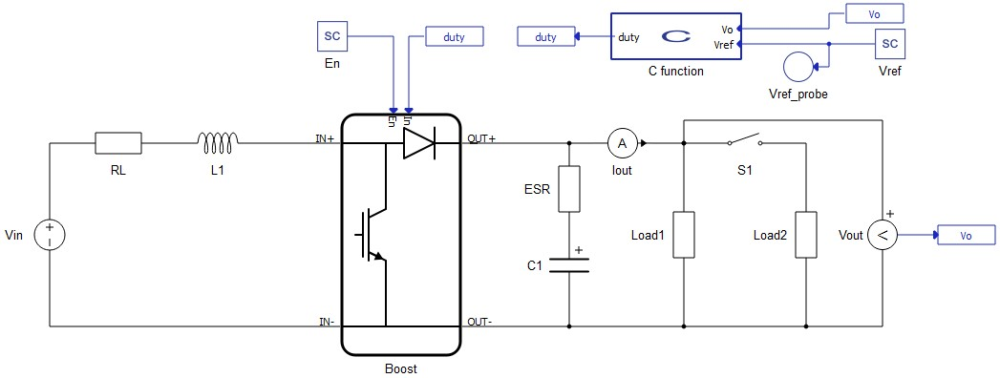
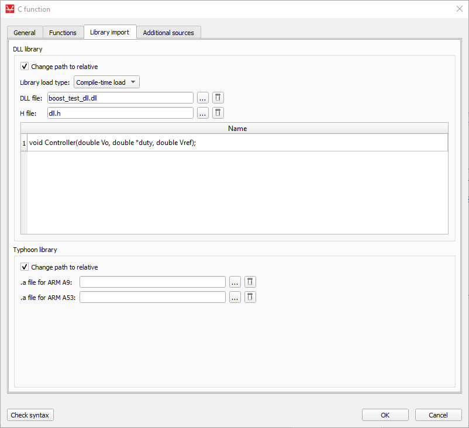
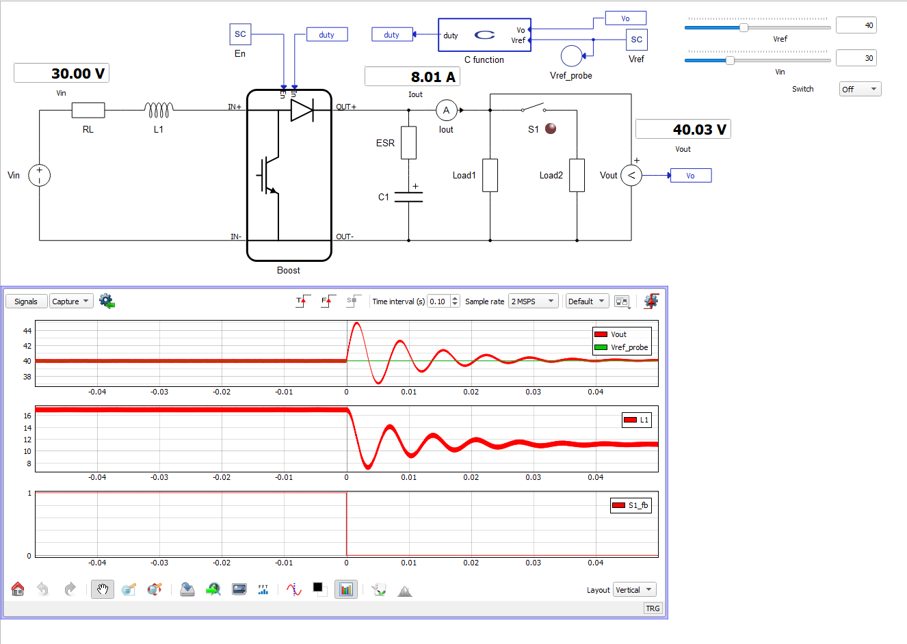
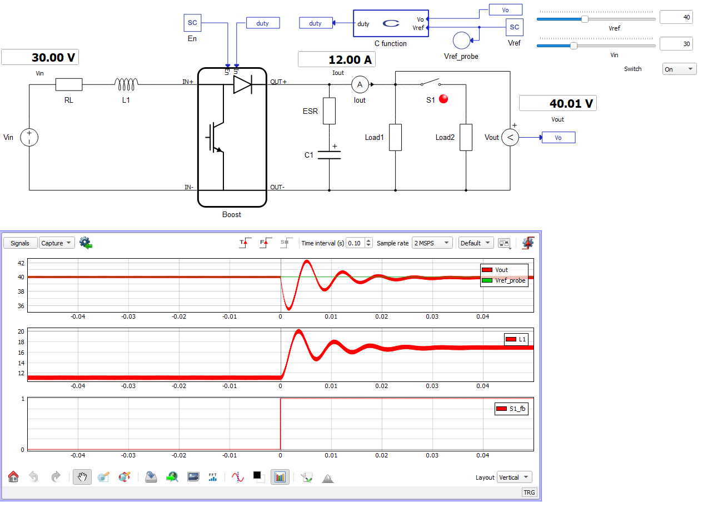

How to import DLL file for C function
Walkthrough on how to import and include Dynamic Link Library (DLL) files into your model using the C function component.
The C function component allows you to include both pre-generated Dynamic Link Libraries (DLLs) and external C language source files. It is important to note that the implementation of functions is hidden, and you will only be able to see the function interface. This feature helps developers to build control applications in third-party software and import their DLL files into the Typhoon HIL toolchain.
This example demonstrates this by showing how a DLL file imported with the C function can be used as the Controller block of a simple Boost Converter.
Model description
The electrical model of a Boost Convertor consists of a DC Voltage Source, an Inductor with internal Resistance, a Capacitor with internal resistance, two types of loads, and a switch. The initial input voltage is 30 V and the output voltage is 40 V. Carrier frequency is set to 10 kHz, and the modulation signal is generated from the C function component. The control part is tested using two different loads: 320 W and 480 W. The Simulation section describes the transitions and behavior of the model.

To include DLL files in the C function, you need to do the following steps:
- In order to generate the modulation signal, a DLL file is needed. While you may use many ways to generate the DLL files, in this application we demonstrate the use of Typhoon HIL Control Center's internal C compiler. More details about generating DLL files using the Typhoon HIL compiler is available in the FAQ section.
- After generating a DLL file, you need to add the location of the file in the “Library import” tab in the C function menu. Also, it is important to add the header file as in Figure 2. After configuring, you should find the interface of the function in the “Name” section.

After generating DLL file you need to add location of the file in “Library import” tab. Also, it is important to add the header (.h) file as in Figure 2. After this configuration you should find interface of function in “Name” section.
To include the “Controller” function in Schematic Editor, we use a simple output_fcn function.
output_fnc(){
Controller(Vo,&duty,Vref);
}The implementation of the "Controller" function in C language is shown below:
/* Replace "dll.h" with the name of your header */
#include "dll.h"
#include <math.h>
#define Dmin 0.
#define Dmax 1
//PI
//double Vref = 40;
double Vsense = 0.;
double err = 0.;
double anti = 0.;
double Rc = 0.;
double Rsat = 0.;
double intg = 0.;
double ka = 166.67;
double kp = 0.006;
double ki = 0.436;
double in0, in1, out = 0;
void Controller(double Vo,double* duty,double Vref)
{
#define Ts 100e-6 //100kHz
Vsense = Vo;
err = Vref - Vsense;
anti = err - ka*(Rc - Rsat);
intg += ki*Ts*anti;
Rc = kp*err + intg;
if ( Rc < Dmin ) Rsat = Dmin;
else if ( Rc > Dmax ) Rsat = Dmax;
else Rsat = Rc;
*duty = Rsat;
}The PI regulator is implemented in the void function “Controller”. The inputs for this function are the reference voltage, which comes from the SCADA Input component, and the output voltage of the Boost Converter. We set the duty cycle for the PWM modulator as outputs for the function. The header file is as follows:
#ifndef _DLL_H_
#define _DLL_H_
void Controller(double Vo,double* duty,double Vref);
#endifThe function interface is implemented in the header file, which is required in this application.
Simulation
In this How-to example, we can see the behavior of a PI controller implemented by C function. By setting the state of the contactor "On" or "Off", you can easily see the behavior and validate the PI controller.
The Figure 3 shows how the controller reacts in a step change of load. In the first window, you can see the transition of the voltage of the converter output during the step change. In the second window, you can see how the inductor current decreases during a step change. In the third window, you can see the position of contactor S1.

In Figure 4, we can see how the controller reacts to a step change of the inverter from 320 W to 480 W. Reference voltage is successfully regulated to the reference value of 40 V for this application. In the first window, you can see a similar transition to the previous scenario. In the second window, you can see how the inductor current increases during a step change. In the third window, you can see the position of contactor S1.

Authors
[1] Simisa Simic